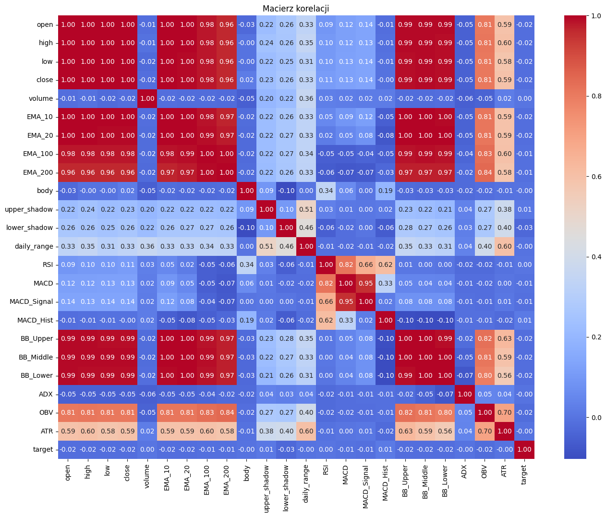
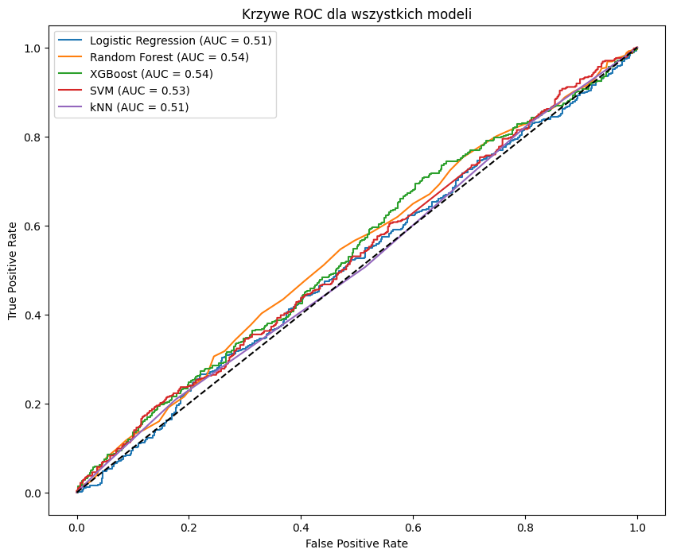

Klasyfikacja binarna - ćwiczenia#
!pip install pandas_ta
!pip install --upgrade xgboost
Requirement already satisfied: pandas_ta in /home/maciej/anaconda3/lib/python3.12/site-packages (0.4.71b0)
Requirement already satisfied: numba==0.61.2 in /home/maciej/anaconda3/lib/python3.12/site-packages (from pandas_ta) (0.61.2)
Requirement already satisfied: numpy>=2.2.6 in /home/maciej/anaconda3/lib/python3.12/site-packages (from pandas_ta) (2.2.6)
Requirement already satisfied: pandas>=2.3.2 in /home/maciej/anaconda3/lib/python3.12/site-packages (from pandas_ta) (2.3.3)
Requirement already satisfied: tqdm>=4.67.1 in /home/maciej/anaconda3/lib/python3.12/site-packages (from pandas_ta) (4.67.1)
Requirement already satisfied: llvmlite<0.45,>=0.44.0dev0 in /home/maciej/anaconda3/lib/python3.12/site-packages (from numba==0.61.2->pandas_ta) (0.44.0)
Requirement already satisfied: python-dateutil>=2.8.2 in /home/maciej/anaconda3/lib/python3.12/site-packages (from pandas>=2.3.2->pandas_ta) (2.9.0.post0)
Requirement already satisfied: pytz>=2020.1 in /home/maciej/anaconda3/lib/python3.12/site-packages (from pandas>=2.3.2->pandas_ta) (2024.1)
Requirement already satisfied: tzdata>=2022.7 in /home/maciej/anaconda3/lib/python3.12/site-packages (from pandas>=2.3.2->pandas_ta) (2023.3)
Requirement already satisfied: six>=1.5 in /home/maciej/anaconda3/lib/python3.12/site-packages (from python-dateutil>=2.8.2->pandas>=2.3.2->pandas_ta) (1.16.0)
Collecting xgboost
Using cached xgboost-3.1.1-py3-none-manylinux_2_28_x86_64.whl.metadata (2.1 kB)
Requirement already satisfied: numpy in /home/maciej/anaconda3/lib/python3.12/site-packages (from xgboost) (2.2.6)
Collecting nvidia-nccl-cu12 (from xgboost)
Using cached nvidia_nccl_cu12-2.28.7-py3-none-manylinux_2_18_x86_64.whl.metadata (2.0 kB)
Requirement already satisfied: scipy in /home/maciej/anaconda3/lib/python3.12/site-packages (from xgboost) (1.13.1)
Downloading xgboost-3.1.1-py3-none-manylinux_2_28_x86_64.whl (115.9 MB)
?25l ━━━━━━━━━━━━━━━━━━━━━━━━━━━━━━━━━━━━━━━━ 0.0/115.9 MB ? eta -:--:--
━━━━━━━━━━━━━━━━━━━━━━━━━━━━━━━━━━━━━━━━ 0.0/115.9 MB ? eta -:--:--
━━━━━━━━━━━━━━━━━━━━━━━━━━━━━━━━━━━━━━━━ 0.3/115.9 MB ? eta -:--:--
━━━━━━━━━━━━━━━━━━━━━━━━━━━━━━━━━━━━━━━━ 0.3/115.9 MB ? eta -:--:--
━━━━━━━━━━━━━━━━━━━━━━━━━━━━━━━━━━━━━━━━ 0.5/115.9 MB 742.3 kB/s eta 0:02:36
━━━━━━━━━━━━━━━━━━━━━━━━━━━━━━━━━━━━━━━━ 0.8/115.9 MB 900.7 kB/s eta 0:02:08
━━━━━━━━━━━━━━━━━━━━━━━━━━━━━━━━━━━━━━━━ 1.0/115.9 MB 1.0 MB/s eta 0:01:52
━━━━━━━━━━━━━━━━━━━━━━━━━━━━━━━━━━━━━━━━ 1.3/115.9 MB 1.1 MB/s eta 0:01:47
╸━━━━━━━━━━━━━━━━━━━━━━━━━━━━━━━━━━━━━━━ 1.6/115.9 MB 1.1 MB/s eta 0:01:41
╸━━━━━━━━━━━━━━━━━━━━━━━━━━━━━━━━━━━━━━━ 1.8/115.9 MB 1.2 MB/s eta 0:01:38
╸━━━━━━━━━━━━━━━━━━━━━━━━━━━━━━━━━━━━━━━ 2.1/115.9 MB 1.2 MB/s eta 0:01:37
╸━━━━━━━━━━━━━━━━━━━━━━━━━━━━━━━━━━━━━━━ 2.4/115.9 MB 1.2 MB/s eta 0:01:33
╸━━━━━━━━━━━━━━━━━━━━━━━━━━━━━━━━━━━━━━━ 2.6/115.9 MB 1.3 MB/s eta 0:01:31
━╺━━━━━━━━━━━━━━━━━━━━━━━━━━━━━━━━━━━━━━ 3.1/115.9 MB 1.3 MB/s eta 0:01:29
━╺━━━━━━━━━━━━━━━━━━━━━━━━━━━━━━━━━━━━━━ 3.4/115.9 MB 1.3 MB/s eta 0:01:26
━╺━━━━━━━━━━━━━━━━━━━━━━━━━━━━━━━━━━━━━━ 3.7/115.9 MB 1.3 MB/s eta 0:01:27
━╺━━━━━━━━━━━━━━━━━━━━━━━━━━━━━━━━━━━━━━ 3.7/115.9 MB 1.3 MB/s eta 0:01:27
━╺━━━━━━━━━━━━━━━━━━━━━━━━━━━━━━━━━━━━━━ 3.7/115.9 MB 1.3 MB/s eta 0:01:27
━╺━━━━━━━━━━━━━━━━━━━━━━━━━━━━━━━━━━━━━━ 3.9/115.9 MB 1.2 MB/s eta 0:01:35
━╺━━━━━━━━━━━━━━━━━━━━━━━━━━━━━━━━━━━━━━ 4.2/115.9 MB 1.2 MB/s eta 0:01:36
━╸━━━━━━━━━━━━━━━━━━━━━━━━━━━━━━━━━━━━━━ 4.5/115.9 MB 1.2 MB/s eta 0:01:36
━╸━━━━━━━━━━━━━━━━━━━━━━━━━━━━━━━━━━━━━━ 4.5/115.9 MB 1.2 MB/s eta 0:01:36
━╸━━━━━━━━━━━━━━━━━━━━━━━━━━━━━━━━━━━━━━ 4.7/115.9 MB 1.1 MB/s eta 0:01:40
━╸━━━━━━━━━━━━━━━━━━━━━━━━━━━━━━━━━━━━━━ 4.7/115.9 MB 1.1 MB/s eta 0:01:40
━╸━━━━━━━━━━━━━━━━━━━━━━━━━━━━━━━━━━━━━━ 5.0/115.9 MB 1.1 MB/s eta 0:01:44
━╸━━━━━━━━━━━━━━━━━━━━━━━━━━━━━━━━━━━━━━ 5.0/115.9 MB 1.1 MB/s eta 0:01:44
━╸━━━━━━━━━━━━━━━━━━━━━━━━━━━━━━━━━━━━━━ 5.2/115.9 MB 1.1 MB/s eta 0:01:46
━╸━━━━━━━━━━━━━━━━━━━━━━━━━━━━━━━━━━━━━━ 5.5/115.9 MB 1.0 MB/s eta 0:01:46
━╸━━━━━━━━━━━━━━━━━━━━━━━━━━━━━━━━━━━━━━ 5.8/115.9 MB 1.0 MB/s eta 0:01:46
━╸━━━━━━━━━━━━━━━━━━━━━━━━━━━━━━━━━━━━━━ 5.8/115.9 MB 1.0 MB/s eta 0:01:46
━━╺━━━━━━━━━━━━━━━━━━━━━━━━━━━━━━━━━━━━━ 6.0/115.9 MB 1.0 MB/s eta 0:01:48
━━╺━━━━━━━━━━━━━━━━━━━━━━━━━━━━━━━━━━━━━ 6.3/115.9 MB 1.0 MB/s eta 0:01:48
━━╺━━━━━━━━━━━━━━━━━━━━━━━━━━━━━━━━━━━━━ 6.6/115.9 MB 1.0 MB/s eta 0:01:46
━━╺━━━━━━━━━━━━━━━━━━━━━━━━━━━━━━━━━━━━━ 6.6/115.9 MB 1.0 MB/s eta 0:01:46
━━╺━━━━━━━━━━━━━━━━━━━━━━━━━━━━━━━━━━━━━ 6.8/115.9 MB 1.0 MB/s eta 0:01:48
━━╺━━━━━━━━━━━━━━━━━━━━━━━━━━━━━━━━━━━━━ 6.8/115.9 MB 1.0 MB/s eta 0:01:48
━━╺━━━━━━━━━━━━━━━━━━━━━━━━━━━━━━━━━━━━━ 7.1/115.9 MB 997.5 kB/s eta 0:01:50
━━╸━━━━━━━━━━━━━━━━━━━━━━━━━━━━━━━━━━━━━ 7.3/115.9 MB 996.7 kB/s eta 0:01:49
━━╸━━━━━━━━━━━━━━━━━━━━━━━━━━━━━━━━━━━━━ 7.3/115.9 MB 996.7 kB/s eta 0:01:49
━━╸━━━━━━━━━━━━━━━━━━━━━━━━━━━━━━━━━━━━━ 7.6/115.9 MB 972.2 kB/s eta 0:01:52
━━╸━━━━━━━━━━━━━━━━━━━━━━━━━━━━━━━━━━━━━ 7.6/115.9 MB 972.2 kB/s eta 0:01:52
━━╸━━━━━━━━━━━━━━━━━━━━━━━━━━━━━━━━━━━━━ 7.9/115.9 MB 967.6 kB/s eta 0:01:52
━━╸━━━━━━━━━━━━━━━━━━━━━━━━━━━━━━━━━━━━━ 8.1/115.9 MB 963.7 kB/s eta 0:01:52
━━╸━━━━━━━━━━━━━━━━━━━━━━━━━━━━━━━━━━━━━ 8.1/115.9 MB 963.7 kB/s eta 0:01:52
━━╸━━━━━━━━━━━━━━━━━━━━━━━━━━━━━━━━━━━━━ 8.4/115.9 MB 953.2 kB/s eta 0:01:53
━━╸━━━━━━━━━━━━━━━━━━━━━━━━━━━━━━━━━━━━━ 8.4/115.9 MB 953.2 kB/s eta 0:01:53
━━╸━━━━━━━━━━━━━━━━━━━━━━━━━━━━━━━━━━━━━ 8.4/115.9 MB 953.2 kB/s eta 0:01:53
━━╸━━━━━━━━━━━━━━━━━━━━━━━━━━━━━━━━━━━━━ 8.4/115.9 MB 953.2 kB/s eta 0:01:53
━━╸━━━━━━━━━━━━━━━━━━━━━━━━━━━━━━━━━━━━━ 8.4/115.9 MB 953.2 kB/s eta 0:01:53
━━━╺━━━━━━━━━━━━━━━━━━━━━━━━━━━━━━━━━━━━ 8.9/115.9 MB 906.0 kB/s eta 0:01:59
━━━╺━━━━━━━━━━━━━━━━━━━━━━━━━━━━━━━━━━━━ 9.2/115.9 MB 925.4 kB/s eta 0:01:56
━━━╺━━━━━━━━━━━━━━━━━━━━━━━━━━━━━━━━━━━━ 9.4/115.9 MB 930.9 kB/s eta 0:01:55
━━━╺━━━━━━━━━━━━━━━━━━━━━━━━━━━━━━━━━━━━ 9.7/115.9 MB 937.4 kB/s eta 0:01:54
━━━╺━━━━━━━━━━━━━━━━━━━━━━━━━━━━━━━━━━━━ 9.7/115.9 MB 937.4 kB/s eta 0:01:54
━━━╺━━━━━━━━━━━━━━━━━━━━━━━━━━━━━━━━━━━━ 10.0/115.9 MB 926.6 kB/s eta 0:01:55
━━━╺━━━━━━━━━━━━━━━━━━━━━━━━━━━━━━━━━━━━ 10.0/115.9 MB 926.6 kB/s eta 0:01:55
━━━╸━━━━━━━━━━━━━━━━━━━━━━━━━━━━━━━━━━━━ 10.2/115.9 MB 916.6 kB/s eta 0:01:56
━━━╸━━━━━━━━━━━━━━━━━━━━━━━━━━━━━━━━━━━━ 10.5/115.9 MB 910.3 kB/s eta 0:01:56
━━━╸━━━━━━━━━━━━━━━━━━━━━━━━━━━━━━━━━━━━ 10.5/115.9 MB 910.3 kB/s eta 0:01:56
━━━╸━━━━━━━━━━━━━━━━━━━━━━━━━━━━━━━━━━━━ 10.7/115.9 MB 906.1 kB/s eta 0:01:57
━━━╸━━━━━━━━━━━━━━━━━━━━━━━━━━━━━━━━━━━━ 11.0/115.9 MB 914.0 kB/s eta 0:01:55
━━━╸━━━━━━━━━━━━━━━━━━━━━━━━━━━━━━━━━━━━ 11.3/115.9 MB 918.6 kB/s eta 0:01:54
━━━╸━━━━━━━━━━━━━━━━━━━━━━━━━━━━━━━━━━━━ 11.5/115.9 MB 927.9 kB/s eta 0:01:53
━━━━╺━━━━━━━━━━━━━━━━━━━━━━━━━━━━━━━━━━━ 11.8/115.9 MB 929.5 kB/s eta 0:01:52
━━━━╺━━━━━━━━━━━━━━━━━━━━━━━━━━━━━━━━━━━ 12.1/115.9 MB 939.0 kB/s eta 0:01:51
━━━━╺━━━━━━━━━━━━━━━━━━━━━━━━━━━━━━━━━━━ 12.3/115.9 MB 942.4 kB/s eta 0:01:50
━━━━╺━━━━━━━━━━━━━━━━━━━━━━━━━━━━━━━━━━━ 12.6/115.9 MB 950.2 kB/s eta 0:01:49
━━━━╺━━━━━━━━━━━━━━━━━━━━━━━━━━━━━━━━━━━ 12.8/115.9 MB 957.2 kB/s eta 0:01:48
━━━━╸━━━━━━━━━━━━━━━━━━━━━━━━━━━━━━━━━━━ 13.1/115.9 MB 959.3 kB/s eta 0:01:48
━━━━╸━━━━━━━━━━━━━━━━━━━━━━━━━━━━━━━━━━━ 13.4/115.9 MB 962.5 kB/s eta 0:01:47
━━━━╸━━━━━━━━━━━━━━━━━━━━━━━━━━━━━━━━━━━ 13.6/115.9 MB 967.0 kB/s eta 0:01:46
━━━━╸━━━━━━━━━━━━━━━━━━━━━━━━━━━━━━━━━━━ 13.9/115.9 MB 973.6 kB/s eta 0:01:45
━━━━╸━━━━━━━━━━━━━━━━━━━━━━━━━━━━━━━━━━━ 14.2/115.9 MB 978.7 kB/s eta 0:01:44
━━━━╸━━━━━━━━━━━━━━━━━━━━━━━━━━━━━━━━━━━ 14.4/115.9 MB 984.2 kB/s eta 0:01:44
━━━━━╺━━━━━━━━━━━━━━━━━━━━━━━━━━━━━━━━━━ 14.7/115.9 MB 986.2 kB/s eta 0:01:43
━━━━━╺━━━━━━━━━━━━━━━━━━━━━━━━━━━━━━━━━━ 14.9/115.9 MB 992.3 kB/s eta 0:01:42
━━━━━╺━━━━━━━━━━━━━━━━━━━━━━━━━━━━━━━━━━ 15.2/115.9 MB 994.6 kB/s eta 0:01:42
━━━━━╺━━━━━━━━━━━━━━━━━━━━━━━━━━━━━━━━━━ 15.5/115.9 MB 994.5 kB/s eta 0:01:41
━━━━━╺━━━━━━━━━━━━━━━━━━━━━━━━━━━━━━━━━━ 15.5/115.9 MB 994.5 kB/s eta 0:01:41
━━━━━╺━━━━━━━━━━━━━━━━━━━━━━━━━━━━━━━━━━ 15.7/115.9 MB 995.3 kB/s eta 0:01:41
━━━━━╸━━━━━━━━━━━━━━━━━━━━━━━━━━━━━━━━━━ 16.0/115.9 MB 999.1 kB/s eta 0:01:40
━━━━━╸━━━━━━━━━━━━━━━━━━━━━━━━━━━━━━━━━━ 16.3/115.9 MB 998.8 kB/s eta 0:01:40
━━━━━╸━━━━━━━━━━━━━━━━━━━━━━━━━━━━━━━━━━ 16.5/115.9 MB 998.3 kB/s eta 0:01:40
━━━━━╸━━━━━━━━━━━━━━━━━━━━━━━━━━━━━━━━━━ 16.8/115.9 MB 1.0 MB/s eta 0:01:39
━━━━━╸━━━━━━━━━━━━━━━━━━━━━━━━━━━━━━━━━━ 16.8/115.9 MB 1.0 MB/s eta 0:01:39
━━━━━╸━━━━━━━━━━━━━━━━━━━━━━━━━━━━━━━━━━ 17.0/115.9 MB 1.0 MB/s eta 0:01:39
━━━━━╸━━━━━━━━━━━━━━━━━━━━━━━━━━━━━━━━━━ 17.3/115.9 MB 1.0 MB/s eta 0:01:39
━━━━━━╺━━━━━━━━━━━━━━━━━━━━━━━━━━━━━━━━━ 17.6/115.9 MB 1.0 MB/s eta 0:01:38
━━━━━━╺━━━━━━━━━━━━━━━━━━━━━━━━━━━━━━━━━ 17.8/115.9 MB 1.0 MB/s eta 0:01:38
━━━━━━╺━━━━━━━━━━━━━━━━━━━━━━━━━━━━━━━━━ 18.1/115.9 MB 1.0 MB/s eta 0:01:38
━━━━━━╺━━━━━━━━━━━━━━━━━━━━━━━━━━━━━━━━━ 18.1/115.9 MB 1.0 MB/s eta 0:01:38
━━━━━━╺━━━━━━━━━━━━━━━━━━━━━━━━━━━━━━━━━ 18.4/115.9 MB 1.0 MB/s eta 0:01:37
━━━━━━╺━━━━━━━━━━━━━━━━━━━━━━━━━━━━━━━━━ 18.6/115.9 MB 1.0 MB/s eta 0:01:37
━━━━━━╸━━━━━━━━━━━━━━━━━━━━━━━━━━━━━━━━━ 18.9/115.9 MB 1.0 MB/s eta 0:01:36
━━━━━━╸━━━━━━━━━━━━━━━━━━━━━━━━━━━━━━━━━ 19.1/115.9 MB 1.0 MB/s eta 0:01:36
━━━━━━╸━━━━━━━━━━━━━━━━━━━━━━━━━━━━━━━━━ 19.1/115.9 MB 1.0 MB/s eta 0:01:36
━━━━━━╸━━━━━━━━━━━━━━━━━━━━━━━━━━━━━━━━━ 19.4/115.9 MB 1.0 MB/s eta 0:01:37
━━━━━━╸━━━━━━━━━━━━━━━━━━━━━━━━━━━━━━━━━ 19.7/115.9 MB 1.0 MB/s eta 0:01:36
━━━━━━╸━━━━━━━━━━━━━━━━━━━━━━━━━━━━━━━━━ 19.9/115.9 MB 1.0 MB/s eta 0:01:36
━━━━━━╸━━━━━━━━━━━━━━━━━━━━━━━━━━━━━━━━━ 19.9/115.9 MB 1.0 MB/s eta 0:01:36
━━━━━━━╺━━━━━━━━━━━━━━━━━━━━━━━━━━━━━━━━ 20.4/115.9 MB 1.0 MB/s eta 0:01:35
━━━━━━━╺━━━━━━━━━━━━━━━━━━━━━━━━━━━━━━━━ 20.4/115.9 MB 1.0 MB/s eta 0:01:35
━━━━━━━╺━━━━━━━━━━━━━━━━━━━━━━━━━━━━━━━━ 20.7/115.9 MB 1.0 MB/s eta 0:01:35
━━━━━━━╺━━━━━━━━━━━━━━━━━━━━━━━━━━━━━━━━ 20.7/115.9 MB 1.0 MB/s eta 0:01:35
━━━━━━━╺━━━━━━━━━━━━━━━━━━━━━━━━━━━━━━━━ 21.0/115.9 MB 999.9 kB/s eta 0:01:35
━━━━━━━╺━━━━━━━━━━━━━━━━━━━━━━━━━━━━━━━━ 21.2/115.9 MB 1.0 MB/s eta 0:01:35
━━━━━━━╺━━━━━━━━━━━━━━━━━━━━━━━━━━━━━━━━ 21.5/115.9 MB 1.0 MB/s eta 0:01:35
━━━━━━━╺━━━━━━━━━━━━━━━━━━━━━━━━━━━━━━━━ 21.5/115.9 MB 1.0 MB/s eta 0:01:35
━━━━━━━╸━━━━━━━━━━━━━━━━━━━━━━━━━━━━━━━━ 21.8/115.9 MB 994.0 kB/s eta 0:01:35
━━━━━━━╸━━━━━━━━━━━━━━━━━━━━━━━━━━━━━━━━ 21.8/115.9 MB 994.0 kB/s eta 0:01:35
━━━━━━━╸━━━━━━━━━━━━━━━━━━━━━━━━━━━━━━━━ 21.8/115.9 MB 994.0 kB/s eta 0:01:35
━━━━━━━╸━━━━━━━━━━━━━━━━━━━━━━━━━━━━━━━━ 22.0/115.9 MB 985.8 kB/s eta 0:01:36
━━━━━━━╸━━━━━━━━━━━━━━━━━━━━━━━━━━━━━━━━ 22.0/115.9 MB 985.8 kB/s eta 0:01:36
━━━━━━━╸━━━━━━━━━━━━━━━━━━━━━━━━━━━━━━━━ 22.3/115.9 MB 978.5 kB/s eta 0:01:36
━━━━━━━╸━━━━━━━━━━━━━━━━━━━━━━━━━━━━━━━━ 22.5/115.9 MB 980.3 kB/s eta 0:01:36
━━━━━━━╸━━━━━━━━━━━━━━━━━━━━━━━━━━━━━━━━ 22.8/115.9 MB 981.9 kB/s eta 0:01:35
━━━━━━━╸━━━━━━━━━━━━━━━━━━━━━━━━━━━━━━━━ 23.1/115.9 MB 985.8 kB/s eta 0:01:35
━━━━━━━━╺━━━━━━━━━━━━━━━━━━━━━━━━━━━━━━━ 23.3/115.9 MB 989.7 kB/s eta 0:01:34
━━━━━━━━╺━━━━━━━━━━━━━━━━━━━━━━━━━━━━━━━ 23.6/115.9 MB 992.1 kB/s eta 0:01:34
━━━━━━━━╺━━━━━━━━━━━━━━━━━━━━━━━━━━━━━━━ 23.9/115.9 MB 995.4 kB/s eta 0:01:33
━━━━━━━━╺━━━━━━━━━━━━━━━━━━━━━━━━━━━━━━━ 24.4/115.9 MB 1.0 MB/s eta 0:01:32
━━━━━━━━╺━━━━━━━━━━━━━━━━━━━━━━━━━━━━━━━ 24.4/115.9 MB 1.0 MB/s eta 0:01:32
━━━━━━━━╸━━━━━━━━━━━━━━━━━━━━━━━━━━━━━━━ 24.9/115.9 MB 1.0 MB/s eta 0:01:31
━━━━━━━━╸━━━━━━━━━━━━━━━━━━━━━━━━━━━━━━━ 24.9/115.9 MB 1.0 MB/s eta 0:01:31
━━━━━━━━╸━━━━━━━━━━━━━━━━━━━━━━━━━━━━━━━ 25.2/115.9 MB 1.0 MB/s eta 0:01:31
━━━━━━━━╸━━━━━━━━━━━━━━━━━━━━━━━━━━━━━━━ 25.4/115.9 MB 1.0 MB/s eta 0:01:30
━━━━━━━━╸━━━━━━━━━━━━━━━━━━━━━━━━━━━━━━━ 25.7/115.9 MB 1.0 MB/s eta 0:01:30
━━━━━━━━╸━━━━━━━━━━━━━━━━━━━━━━━━━━━━━━━ 26.0/115.9 MB 1.0 MB/s eta 0:01:29
━━━━━━━━━╺━━━━━━━━━━━━━━━━━━━━━━━━━━━━━━ 26.2/115.9 MB 1.0 MB/s eta 0:01:29
━━━━━━━━━╺━━━━━━━━━━━━━━━━━━━━━━━━━━━━━━ 26.5/115.9 MB 1.0 MB/s eta 0:01:28
━━━━━━━━━╺━━━━━━━━━━━━━━━━━━━━━━━━━━━━━━ 26.7/115.9 MB 1.0 MB/s eta 0:01:28
━━━━━━━━━╺━━━━━━━━━━━━━━━━━━━━━━━━━━━━━━ 27.0/115.9 MB 1.0 MB/s eta 0:01:28
━━━━━━━━━╺━━━━━━━━━━━━━━━━━━━━━━━━━━━━━━ 27.3/115.9 MB 1.0 MB/s eta 0:01:27
━━━━━━━━━╺━━━━━━━━━━━━━━━━━━━━━━━━━━━━━━ 27.3/115.9 MB 1.0 MB/s eta 0:01:27
━━━━━━━━━╸━━━━━━━━━━━━━━━━━━━━━━━━━━━━━━ 27.5/115.9 MB 1.0 MB/s eta 0:01:27
^C
━━━━━━━━━╸━━━━━━━━━━━━━━━━━━━━━━━━━━━━━━ 27.8/115.9 MB 1.0 MB/s eta 0:01:27
?25hERROR: Operation cancelled by user
!pip install --upgrade scikit-learn
Requirement already satisfied: scikit-learn in /usr/local/lib/python3.11/dist-packages (1.6.1)
Requirement already satisfied: numpy>=1.19.5 in /usr/local/lib/python3.11/dist-packages (from scikit-learn) (1.26.4)
Requirement already satisfied: scipy>=1.6.0 in /usr/local/lib/python3.11/dist-packages (from scikit-learn) (1.13.1)
Requirement already satisfied: joblib>=1.2.0 in /usr/local/lib/python3.11/dist-packages (from scikit-learn) (1.4.2)
Requirement already satisfied: threadpoolctl>=3.1.0 in /usr/local/lib/python3.11/dist-packages (from scikit-learn) (3.5.0)
# --- Komórka 0: Importowanie bibliotek ---
import pandas as pd
import numpy as np
import seaborn as sns
import matplotlib.pyplot as plt
import pandas_ta as ta
from sklearn.model_selection import train_test_split, GridSearchCV
from sklearn.metrics import roc_auc_score
from sklearn.preprocessing import StandardScaler
from sklearn.linear_model import LogisticRegression
from sklearn.ensemble import RandomForestClassifier
from sklearn.svm import SVC
from sklearn.neighbors import KNeighborsClassifier
import xgboost as xgb
from sklearn.metrics import classification_report, confusion_matrix, roc_curve, auc
from sklearn.pipeline import Pipeline
# --- Komórka 1: Wczytywanie danych ---
# Wczytanie pliku CSV bez nagłówków i nadanie własnych nazw kolumn
df = pd.read_csv('AUDNZD_D1.csv', header=None,
names=['datetime', 'open', 'high', 'low', 'close', 'volume'])
# Konwersja kolumny datetime na format daty
df['datetime'] = pd.to_datetime(df['datetime'])
# Sprawdzenie podstawowych informacji o danych
print("Informacje o zbiorze danych:")
print(df.info())
print("\nPierwsze 5 wierszy:")
print(df.head())
print("\nOstatnie 3 wiersze:")
print(df.tail(3))
print("\nStatystyki opisowe:")
print(df.drop(['datetime'], axis=1).describe())
Informacje o zbiorze danych:
<class 'pandas.core.frame.DataFrame'>
RangeIndex: 5017 entries, 0 to 5016
Data columns (total 6 columns):
# Column Non-Null Count Dtype
--- ------ -------------- -----
0 datetime 5017 non-null datetime64[ns]
1 open 5017 non-null float64
2 high 5017 non-null float64
3 low 5017 non-null float64
4 close 5017 non-null float64
5 volume 5017 non-null int64
dtypes: datetime64[ns](1), float64(4), int64(1)
memory usage: 235.3 KB
None
Pierwsze 5 wierszy:
datetime open high low close volume
0 2008-12-29 1.19102 1.19330 1.18430 1.18994 8363
1 2008-12-30 1.18864 1.20059 1.18340 1.19438 57481
2 2008-12-31 1.19318 1.21624 1.18867 1.21527 56691
3 2009-01-01 1.21026 1.21388 1.19905 1.20739 20521
4 2009-01-02 1.20757 1.21268 1.19419 1.21248 56036
Ostatnie 3 wiersze:
datetime open high low close volume
5014 2025-01-15 1.10491 1.10925 1.10373 1.10777 55369
5015 2025-01-16 1.10779 1.11021 1.10590 1.10728 68368
5016 2025-01-17 1.10728 1.11016 1.10645 1.10781 18056
Statystyki opisowe:
open high low close volume
count 5017.000000 5017.000000 5017.000000 5017.000000 5017.000000
mean 1.132055 1.135398 1.128702 1.132046 106084.280845
std 0.091175 0.091842 0.090501 0.091159 64888.409683
min 1.003300 1.006530 0.999400 1.003350 1.000000
25% 1.068000 1.071050 1.065340 1.068050 70386.000000
50% 1.089840 1.092710 1.087210 1.089950 106914.000000
75% 1.226250 1.231250 1.221100 1.226250 143238.000000
max 1.375880 1.379370 1.374860 1.375430 523709.000000
df.head()
| datetime | open | high | low | close | volume | |
|---|---|---|---|---|---|---|
| 0 | 2008-12-29 | 1.19102 | 1.19330 | 1.18430 | 1.18994 | 8363 |
| 1 | 2008-12-30 | 1.18864 | 1.20059 | 1.18340 | 1.19438 | 57481 |
| 2 | 2008-12-31 | 1.19318 | 1.21624 | 1.18867 | 1.21527 | 56691 |
| 3 | 2009-01-01 | 1.21026 | 1.21388 | 1.19905 | 1.20739 | 20521 |
| 4 | 2009-01-02 | 1.20757 | 1.21268 | 1.19419 | 1.21248 | 56036 |
# --- Komórka 2: Obliczanie EMA ---
def calculate_target(df, target_type=0):
"""
Oblicza kolumnę target według wybranej metody:
0 - prosty wzrost/spadek następnej świecy
1 - wzrost/spadek z uwzględnieniem ATR
2 - potwierdzenie wieloświecowe z wolumenem
3 - przełamanie poziomów S/R
"""
if target_type == 0:
return (df['close'].shift(-1) > df['close']).astype(int)
elif target_type == 1:
atr = ta.atr(df['high'], df['low'], df['close'])
next_close = df['close'].shift(-1)
return ((next_close > df['close'] + (2 * atr)) |
(next_close < df['close'] - atr)).astype(int)
elif target_type == 2:
future_close = df['close'].shift(-3)
future_volume = df['volume'].shift(-3)
return ((future_close > df['close']) &
(future_volume > df['volume'])).astype(int)
elif target_type == 3:
lookback = 20
future_bars = 3
rolling_high = df['high'].rolling(lookback).max()
rolling_low = df['low'].rolling(lookback).min()
future_high = df['high'].shift(-future_bars).rolling(future_bars).max()
future_low = df['low'].shift(-future_bars).rolling(future_bars).min()
return ((df['close'] > rolling_high) & (future_high > rolling_high * 1.02) |
(df['close'] < rolling_low) & (future_low < rolling_low * 0.98)).astype(int)
# Obliczanie wskaźników EMA dla różnych okresów
for period in [10, 20, 100, 200]:
df[f'EMA_{period}'] = df['close'].ewm(span=period, adjust=False).mean()
# Dodanie kolumny target
target_type = 0 # Domyślna metoda
df['target'] = calculate_target(df, target_type)
# Dodanie kolumny target (1 jeśli następna świeca ma wyższą
# cenę zamknięcia, 0 jeśli niższą)
# df['target'] = (df['close'].shift(-1) > df['close']).astype(int)
df[['EMA_10', 'EMA_20', 'EMA_100', 'EMA_200']].head()
| EMA_10 | EMA_20 | EMA_100 | EMA_200 | |
|---|---|---|---|---|
| 0 | 1.189940 | 1.189940 | 1.189940 | 1.189940 |
| 1 | 1.190747 | 1.190363 | 1.190028 | 1.189984 |
| 2 | 1.195206 | 1.192735 | 1.190528 | 1.190236 |
| 3 | 1.197421 | 1.194131 | 1.190862 | 1.190406 |
| 4 | 1.200159 | 1.195878 | 1.191290 | 1.190626 |
# --- Komórka 3: Czyszczenie danych ---
# Usunięcie wierszy z brakującymi wartościami
df_cleaned = df.dropna()
# Sprawdzenie wierszy zduplikowanych i ich usunięcie
df_cleaned = df_cleaned.drop_duplicates()
# Sprawdzenie wartości odstających przy użyciu metody IQR
def remove_outliers(df, columns):
"""
Funkcja usuwająca wartości odstające na podstawie metody IQR
"""
for col in columns:
Q1 = df[col].quantile(0.25)
Q3 = df[col].quantile(0.75)
IQR = Q3 - Q1
lower_bound = Q1 - 1.5 * IQR
upper_bound = Q3 + 1.5 * IQR
df = df[(df[col] >= lower_bound) & (df[col] <= upper_bound)]
return df
numerical_columns = ['open', 'high', 'low', 'close', 'volume']
df_cleaned = remove_outliers(df_cleaned, numerical_columns)
# --- Komórka 4: Inżynieria cech ---
# Dodanie nowych cech technicznych
df_cleaned['body'] = df_cleaned['close'] - df_cleaned['open']
df_cleaned['upper_shadow'] = df_cleaned['high'] - df_cleaned[['open', 'close']].max(axis=1)
df_cleaned['lower_shadow'] = df_cleaned[['open', 'close']].min(axis=1) - df_cleaned['low']
df_cleaned['daily_range'] = df_cleaned['high'] - df_cleaned['low']
# Dodanie wskaźników technicznych przy użyciu modułu pandas_ta
df_cleaned['RSI'] = ta.rsi(df_cleaned['close'], length=14)
macd = ta.macd(df_cleaned['close'])
df_cleaned['MACD'] = macd['MACD_12_26_9']
df_cleaned['MACD_Signal'] = macd['MACDs_12_26_9']
df_cleaned['MACD_Hist'] = macd['MACDh_12_26_9']
bb = ta.bbands(df_cleaned['close'], length=20)
df_cleaned['BB_Upper'] = bb['BBU_20_2.0']
df_cleaned['BB_Middle'] = bb['BBM_20_2.0']
df_cleaned['BB_Lower'] = bb['BBL_20_2.0']
df_cleaned['ADX'] = ta.adx(df_cleaned['high'], df_cleaned['low'], df_cleaned['close'])['ADX_14']
df_cleaned['OBV'] = ta.obv(df_cleaned['close'], df_cleaned['volume'])
df_cleaned['ATR'] = ta.atr(df_cleaned['high'], df_cleaned['low'], df_cleaned['close'])
df_cleaned = df_cleaned.dropna()
# --- Komórka 5: Przygotowanie danych do modelowania ---
# Wybór cech do modelowania
features = ['open', 'high', 'low', 'close', 'volume',
'EMA_10', 'EMA_20', 'EMA_100', 'EMA_200',
'body', 'upper_shadow', 'lower_shadow', 'daily_range',
'RSI', 'MACD', 'MACD_Signal', 'MACD_Hist',
'BB_Upper', 'BB_Middle', 'BB_Lower', 'ADX', 'OBV', 'ATR']
X = df_cleaned[features]
y = df_cleaned['target']
# Podział na zbiór treningowy i testowy
X_train, X_test, y_train, y_test = train_test_split(X, y, test_size=0.2, random_state=42)
# Standaryzacja danych
scaler = StandardScaler()
X_train_scaled = scaler.fit_transform(X_train)
X_test_scaled = scaler.transform(X_test)
# --- Komórka 5.5: Analiza korelacji ---
# Obliczenie macierzy korelacji
correlation_matrix = df_cleaned[features + ['target']].corr()
# Wizualizacja macierzy korelacji
plt.figure(figsize=(16, 12)) # Zwiększenie rozmiaru wykresu
sns.heatmap(correlation_matrix, annot=True, cmap='coolwarm', fmt=".2f")
plt.title('Macierz korelacji')
plt.show()
# Wyświetlenie korelacji cech z targetem
target_correlations = correlation_matrix['target'].drop('target') # Usunięcie korelacji targetu z samym sobą
print("\nKorelacja cech z targetem:\n", target_correlations)

Korelacja cech z targetem:
open -0.015919
high -0.015612
low -0.015647
close -0.016068
volume 0.000295
EMA_10 -0.015952
EMA_20 -0.015879
EMA_100 -0.013119
EMA_200 -0.012134
body -0.003111
upper_shadow 0.008875
lower_shadow -0.033093
daily_range -0.004383
RSI 0.000677
MACD -0.007788
MACD_Signal -0.012464
MACD_Hist 0.012793
BB_Upper -0.016144
BB_Middle -0.016219
BB_Lower -0.016216
ADX -0.002611
OBV -0.020872
ATR -0.003423
Name: target, dtype: float64
# --- Komórka 6: Trenowanie modeli bazowych ---
# Lista modeli do trenowania
models = {
'Logistic Regression': LogisticRegression(random_state=42),
'Random Forest': RandomForestClassifier(random_state=42),
'XGBoost': xgb.XGBClassifier(random_state=42, use_label_encoder=False, eval_metric='logloss'),
'SVM': SVC(probability=True, random_state=42),
'kNN': KNeighborsClassifier()
}
# Słownik na wyniki
results = {}
# Trenowanie i ewaluacja każdego modelu
for name, model in models.items():
# Trenowanie modelu
model.fit(X_train_scaled, y_train)
# Predykcje
y_pred = model.predict(X_test_scaled)
y_pred_proba = model.predict_proba(X_test_scaled)[:, 1]
# Zapisanie wyników
results[name] = {
'predictions': y_pred,
'probabilities': y_pred_proba
}
# Wydruk raportu klasyfikacji
print(f"\nWyniki dla modelu {name}:")
print(classification_report(y_test, y_pred))
Wyniki dla modelu Logistic Regression:
precision recall f1-score support
0 0.49 0.37 0.42 470
1 0.53 0.65 0.58 507
accuracy 0.51 977
macro avg 0.51 0.51 0.50 977
weighted avg 0.51 0.51 0.50 977
Wyniki dla modelu Random Forest:
precision recall f1-score support
0 0.52 0.50 0.51 470
1 0.55 0.57 0.56 507
accuracy 0.54 977
macro avg 0.54 0.54 0.54 977
weighted avg 0.54 0.54 0.54 977
/usr/local/lib/python3.11/dist-packages/xgboost/core.py:158: UserWarning: [12:30:31] WARNING: /workspace/src/learner.cc:740:
Parameters: { "use_label_encoder" } are not used.
warnings.warn(smsg, UserWarning)
Wyniki dla modelu XGBoost:
precision recall f1-score support
0 0.50 0.52 0.51 470
1 0.54 0.51 0.53 507
accuracy 0.52 977
macro avg 0.52 0.52 0.52 977
weighted avg 0.52 0.52 0.52 977
Wyniki dla modelu SVM:
precision recall f1-score support
0 0.51 0.43 0.47 470
1 0.54 0.61 0.57 507
accuracy 0.52 977
macro avg 0.52 0.52 0.52 977
weighted avg 0.52 0.52 0.52 977
Wyniki dla modelu kNN:
precision recall f1-score support
0 0.48 0.49 0.48 470
1 0.52 0.51 0.51 507
accuracy 0.50 977
macro avg 0.50 0.50 0.50 977
weighted avg 0.50 0.50 0.50 977
# --- Komórka 7: Wizualizacja wyników ---
def plot_roc_curves(results, y_test):
"""
Funkcja rysująca krzywe ROC dla wszystkich modeli
"""
plt.figure(figsize=(10, 8))
for name, result in results.items():
fpr, tpr, _ = roc_curve(y_test, result['probabilities'])
roc_auc = auc(fpr, tpr)
plt.plot(fpr, tpr, label=f'{name} (AUC = {roc_auc:.2f})')
plt.plot([0, 1], [0, 1], 'k--')
plt.xlabel('False Positive Rate')
plt.ylabel('True Positive Rate')
plt.title('Krzywe ROC dla wszystkich modeli')
plt.legend()
plt.show()
# Rysowanie krzywych ROC
plot_roc_curves(results, y_test)

# --- Komórka 8: Strojenie hiperparametrów ---
# Definicja przestrzeni parametrów dla każdego modelu
models1 = {
'Logistic Regression': LogisticRegression(random_state=42),
'Random Forest': RandomForestClassifier(random_state=42),
'SVM': SVC(probability=True, random_state=42),
'kNN': KNeighborsClassifier()
}
param_grids = {
'Logistic Regression': {
'C': [0.001, 0.01, 0.1, 1, 10, 100],
'penalty': ['l2', None]
},
'Random Forest': {
'n_estimators': [100, 200, 300],
'max_depth': [10, 20, 30, None],
'min_samples_split': [2, 5, 10]
},
'SVM': {
'C': [0.1, 1, 10],
'kernel': ['rbf', 'linear'],
'gamma': ['scale', 'auto']
},
'kNN': {
'n_neighbors': [3, 5, 7, 9],
'weights': ['uniform', 'distance'],
'metric': ['euclidean', 'manhattan']
}
}
# Osobne strojenie dla XGBoost
xgb_param_grid = {
'max_depth': [3, 5, 7],
'learning_rate': [0.01, 0.1, 0.3],
'n_estimators': [100, 200, 300]
}
best_models = {}
xgb_model = xgb.XGBClassifier(objective='binary:logistic', random_state=42)
# Konwersja danych do DMatrix
dtrain = xgb.DMatrix(X_train_scaled, label=y_train)
dtest = xgb.DMatrix(X_test_scaled, label=y_test)
# Parametry do przeszukania
params_list = [
{'max_depth': depth, 'eta': lr, 'n_estimators': n_est}
for depth in [3, 5, 7]
for lr in [0.01, 0.1, 0.3]
for n_est in [100, 200, 300]
]
# Ocena każdej kombinacji parametrów
best_score = 0
best_params = None
best_model = None
for params in params_list:
model = xgb.train(
params,
dtrain,
num_boost_round=params['n_estimators'],
evals=[(dtest, 'test')],
verbose_eval=False
)
pred_probs = model.predict(dtest)
score = roc_auc_score(y_test, pred_probs)
if score > best_score:
best_score = score
best_params = params
best_model = model
best_models['XGBoost'] = best_model
print(f"\nNajlepsze parametry XGBoost: {best_params}")
print(f"\nNajlepsze parametry XGBoost:")
print(f"Najlepszy wynik ROC AUC: {best_score:.4f}")
# Przeprowadzenie strojenia dla każdego modelu
for name, model in models1.items():
print(f"\nStrojenie parametrów dla modelu {name}")
grid_search = GridSearchCV(model, param_grids[name], cv=5, scoring='roc_auc', n_jobs=-1)
grid_search.fit(X_train_scaled, y_train)
print(f"Najlepsze parametry: {grid_search.best_params_}")
print(f"Najlepszy wynik: {grid_search.best_score_:.4f}")
best_models[name] = grid_search.best_estimator_
/usr/local/lib/python3.11/dist-packages/xgboost/core.py:158: UserWarning: [12:30:51] WARNING: /workspace/src/learner.cc:740:
Parameters: { "n_estimators" } are not used.
warnings.warn(smsg, UserWarning)
/usr/local/lib/python3.11/dist-packages/xgboost/core.py:158: UserWarning: [12:30:51] WARNING: /workspace/src/learner.cc:740:
Parameters: { "n_estimators" } are not used.
warnings.warn(smsg, UserWarning)
/usr/local/lib/python3.11/dist-packages/xgboost/core.py:158: UserWarning: [12:30:52] WARNING: /workspace/src/learner.cc:740:
Parameters: { "n_estimators" } are not used.
warnings.warn(smsg, UserWarning)
/usr/local/lib/python3.11/dist-packages/xgboost/core.py:158: UserWarning: [12:30:52] WARNING: /workspace/src/learner.cc:740:
Parameters: { "n_estimators" } are not used.
warnings.warn(smsg, UserWarning)
/usr/local/lib/python3.11/dist-packages/xgboost/core.py:158: UserWarning: [12:30:52] WARNING: /workspace/src/learner.cc:740:
Parameters: { "n_estimators" } are not used.
warnings.warn(smsg, UserWarning)
/usr/local/lib/python3.11/dist-packages/xgboost/core.py:158: UserWarning: [12:30:53] WARNING: /workspace/src/learner.cc:740:
Parameters: { "n_estimators" } are not used.
warnings.warn(smsg, UserWarning)
/usr/local/lib/python3.11/dist-packages/xgboost/core.py:158: UserWarning: [12:30:53] WARNING: /workspace/src/learner.cc:740:
Parameters: { "n_estimators" } are not used.
warnings.warn(smsg, UserWarning)
/usr/local/lib/python3.11/dist-packages/xgboost/core.py:158: UserWarning: [12:30:53] WARNING: /workspace/src/learner.cc:740:
Parameters: { "n_estimators" } are not used.
warnings.warn(smsg, UserWarning)
/usr/local/lib/python3.11/dist-packages/xgboost/core.py:158: UserWarning: [12:30:54] WARNING: /workspace/src/learner.cc:740:
Parameters: { "n_estimators" } are not used.
warnings.warn(smsg, UserWarning)
/usr/local/lib/python3.11/dist-packages/xgboost/core.py:158: UserWarning: [12:30:54] WARNING: /workspace/src/learner.cc:740:
Parameters: { "n_estimators" } are not used.
warnings.warn(smsg, UserWarning)
/usr/local/lib/python3.11/dist-packages/xgboost/core.py:158: UserWarning: [12:30:56] WARNING: /workspace/src/learner.cc:740:
Parameters: { "n_estimators" } are not used.
warnings.warn(smsg, UserWarning)
/usr/local/lib/python3.11/dist-packages/xgboost/core.py:158: UserWarning: [12:30:58] WARNING: /workspace/src/learner.cc:740:
Parameters: { "n_estimators" } are not used.
warnings.warn(smsg, UserWarning)
/usr/local/lib/python3.11/dist-packages/xgboost/core.py:158: UserWarning: [12:30:59] WARNING: /workspace/src/learner.cc:740:
Parameters: { "n_estimators" } are not used.
warnings.warn(smsg, UserWarning)
/usr/local/lib/python3.11/dist-packages/xgboost/core.py:158: UserWarning: [12:31:00] WARNING: /workspace/src/learner.cc:740:
Parameters: { "n_estimators" } are not used.
warnings.warn(smsg, UserWarning)
/usr/local/lib/python3.11/dist-packages/xgboost/core.py:158: UserWarning: [12:31:00] WARNING: /workspace/src/learner.cc:740:
Parameters: { "n_estimators" } are not used.
warnings.warn(smsg, UserWarning)
/usr/local/lib/python3.11/dist-packages/xgboost/core.py:158: UserWarning: [12:31:02] WARNING: /workspace/src/learner.cc:740:
Parameters: { "n_estimators" } are not used.
warnings.warn(smsg, UserWarning)
/usr/local/lib/python3.11/dist-packages/xgboost/core.py:158: UserWarning: [12:31:02] WARNING: /workspace/src/learner.cc:740:
Parameters: { "n_estimators" } are not used.
warnings.warn(smsg, UserWarning)
/usr/local/lib/python3.11/dist-packages/xgboost/core.py:158: UserWarning: [12:31:03] WARNING: /workspace/src/learner.cc:740:
Parameters: { "n_estimators" } are not used.
warnings.warn(smsg, UserWarning)
/usr/local/lib/python3.11/dist-packages/xgboost/core.py:158: UserWarning: [12:31:04] WARNING: /workspace/src/learner.cc:740:
Parameters: { "n_estimators" } are not used.
warnings.warn(smsg, UserWarning)
/usr/local/lib/python3.11/dist-packages/xgboost/core.py:158: UserWarning: [12:31:06] WARNING: /workspace/src/learner.cc:740:
Parameters: { "n_estimators" } are not used.
warnings.warn(smsg, UserWarning)
/usr/local/lib/python3.11/dist-packages/xgboost/core.py:158: UserWarning: [12:31:08] WARNING: /workspace/src/learner.cc:740:
Parameters: { "n_estimators" } are not used.
warnings.warn(smsg, UserWarning)
/usr/local/lib/python3.11/dist-packages/xgboost/core.py:158: UserWarning: [12:31:12] WARNING: /workspace/src/learner.cc:740:
Parameters: { "n_estimators" } are not used.
warnings.warn(smsg, UserWarning)
/usr/local/lib/python3.11/dist-packages/xgboost/core.py:158: UserWarning: [12:31:13] WARNING: /workspace/src/learner.cc:740:
Parameters: { "n_estimators" } are not used.
warnings.warn(smsg, UserWarning)
/usr/local/lib/python3.11/dist-packages/xgboost/core.py:158: UserWarning: [12:31:15] WARNING: /workspace/src/learner.cc:740:
Parameters: { "n_estimators" } are not used.
warnings.warn(smsg, UserWarning)
/usr/local/lib/python3.11/dist-packages/xgboost/core.py:158: UserWarning: [12:31:19] WARNING: /workspace/src/learner.cc:740:
Parameters: { "n_estimators" } are not used.
warnings.warn(smsg, UserWarning)
/usr/local/lib/python3.11/dist-packages/xgboost/core.py:158: UserWarning: [12:31:20] WARNING: /workspace/src/learner.cc:740:
Parameters: { "n_estimators" } are not used.
warnings.warn(smsg, UserWarning)
/usr/local/lib/python3.11/dist-packages/xgboost/core.py:158: UserWarning: [12:31:25] WARNING: /workspace/src/learner.cc:740:
Parameters: { "n_estimators" } are not used.
warnings.warn(smsg, UserWarning)
Najlepsze parametry XGBoost: {'max_depth': 7, 'eta': 0.3, 'n_estimators': 200}
Najlepsze parametry XGBoost:
Najlepszy wynik ROC AUC: 0.5538
Strojenie parametrów dla modelu Logistic Regression
Najlepsze parametry: {'C': 10, 'penalty': 'l2'}
Najlepszy wynik: 0.5097
Strojenie parametrów dla modelu Random Forest
Najlepsze parametry: {'max_depth': 10, 'min_samples_split': 10, 'n_estimators': 200}
Najlepszy wynik: 0.5367
Strojenie parametrów dla modelu SVM
Najlepsze parametry: {'C': 10, 'gamma': 'auto', 'kernel': 'rbf'}
Najlepszy wynik: 0.5147
Strojenie parametrów dla modelu kNN
Najlepsze parametry: {'metric': 'euclidean', 'n_neighbors': 3, 'weights': 'distance'}
Najlepszy wynik: 0.4898
# --- Komórka 9: Ewaluacja najlepszych modeli ---
# Słownik na końcowe wyniki
final_results = {}
dtest = xgb.DMatrix(X_test_scaled)
for name, model in best_models.items():
# Predykcje
if name == 'XGBoost':
y_pred = (model.predict(dtest) > 0.5).astype(int) # Binary predictions
y_pred_proba = model.predict(dtest)
else:
y_pred = model.predict(X_test_scaled)
y_pred_proba = model.predict_proba(X_test_scaled)[:, 1]
# Zapisanie wyników
final_results[name] = {
'predictions': y_pred,
'probabilities': y_pred_proba
}
# Wydruk raportu klasyfikacji
print(f"\nKońcowe wyniki dla modelu {name}:")
print(classification_report(y_test, y_pred))
# Rysowanie końcowych krzywych ROC
plot_roc_curves(final_results, y_test)
Końcowe wyniki dla modelu XGBoost:
precision recall f1-score support
0 0.52 0.54 0.53 470
1 0.55 0.53 0.54 507
accuracy 0.53 977
macro avg 0.53 0.53 0.53 977
weighted avg 0.54 0.53 0.53 977
Końcowe wyniki dla modelu Logistic Regression:
precision recall f1-score support
0 0.48 0.36 0.41 470
1 0.52 0.64 0.57 507
accuracy 0.51 977
macro avg 0.50 0.50 0.49 977
weighted avg 0.50 0.51 0.50 977
Końcowe wyniki dla modelu Random Forest:
precision recall f1-score support
0 0.51 0.47 0.49 470
1 0.54 0.58 0.56 507
accuracy 0.53 977
macro avg 0.53 0.53 0.53 977
weighted avg 0.53 0.53 0.53 977
Końcowe wyniki dla modelu SVM:
precision recall f1-score support
0 0.49 0.50 0.49 470
1 0.53 0.51 0.52 507
accuracy 0.51 977
macro avg 0.51 0.51 0.51 977
weighted avg 0.51 0.51 0.51 977
Końcowe wyniki dla modelu kNN:
precision recall f1-score support
0 0.49 0.49 0.49 470
1 0.53 0.53 0.53 507
accuracy 0.51 977
macro avg 0.51 0.51 0.51 977
weighted avg 0.51 0.51 0.51 977
# --- Komórka 10: Tworzenie potoku ---
# Utworzenie potoku z najlepszym modelem
def xgb_pipeline(X_train, y_train, X_test):
scaler = StandardScaler()
X_train_scaled = scaler.fit_transform(X_train)
X_test_scaled = scaler.transform(X_test)
dtrain = xgb.DMatrix(X_train_scaled, label=y_train)
dtest = xgb.DMatrix(X_test_scaled)
model = xgb.train(params={}, dtrain=dtrain)
#return model.predict(dtest)
return (model.predict(dtest) > 0.5).astype(int)
best_model_name = max(final_results.keys(), key=lambda k: roc_auc_score(y_test, final_results[k]['probabilities']))
best_model = best_models[best_model_name]
if best_model_name == 'XGBoost':
pipeline = xgb_pipeline
else:
pipeline = Pipeline([
('scaler', StandardScaler()),
('classifier', best_model)
])
pipeline.fit(X_train, y_train)
if best_model_name != 'XGBoost':
y_pred_pipeline = pipeline.fit(X_train, y_train)
else:
y_pred_pipeline = pipeline(X_train, y_train, X_test)
print("\nWyniki końcowe dla pipeline'u:")
print(classification_report(y_test, y_pred_pipeline))
import joblib
# Zapisanie pipeline'u
if best_model_name != 'XGBoost':
joblib.dump(pipeline, 'candlestick_classification_pipeline.joblib')
#if (best_model_name == 'XGBoost'):
# y_pred_pipeline = xgb_pipeline(X_train, y_train, X_test)
#else:
# y_pred_pipeline = best_model.predict(X_test)
#pipeline = Pipeline([
# ('scaler', StandardScaler()),
# ('classifier', best_model)
#])
print(type(y_pred_pipeline))
# Trening i ewaluacja potoku
#pipeline.fit(X_train, y_train)
#y_pred_pipeline = pipeline.predict(X_test)
#print("\nWyniki końcowe dla pipeline'u:")
#print(classification_report(y_test, y_pred_pipeline))
# Zapisanie pipeline'u
#import joblib
#joblib.dump(pipeline, 'candlestick_classification_pipeline.joblib')
Wyniki końcowe dla pipeline'u:
precision recall f1-score support
0 0.48 0.45 0.47 470
1 0.52 0.55 0.53 507
accuracy 0.50 977
macro avg 0.50 0.50 0.50 977
weighted avg 0.50 0.50 0.50 977
<class 'numpy.ndarray'>
# --- CELL 11: Przykład użycia pipeline'u ---
# Załadowanie nowych danych
new_data = pd.read_csv('AUDUSD_D1.csv', header=None,
names=['datetime', 'open', 'high', 'low', 'close', 'volume'])
# Przygotowanie cech
# (tutaj należy dodać ten sam preprocessing co wcześniej)
# Predykcja
#if best_model_name == 'XGBoost':
# predictions = xgb_pipeline(X_train, y_train, new_data[features])
#else:
# predictions = pipeline.predict(new_data[features])
# probabilities = pipeline.predict_proba(new_data[features])
#
#print("\nPrzykładowe predykcje dla nowych danych:")
#print(predictions[:10])